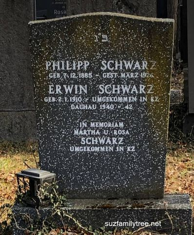

Philipp Schwarz
1884–1926
Life events
| Born | |
|---|---|
| Lived | 28 Oct 1890 · 1020, Kleine Pfarrgasse 29, Vienna, Austria Map · per daughter's birth record |
| Lived | 24 Jul 1898 · 1200 Bäuerlegasse 19, Vienna, Austria Map · per brother, Richard's, birth |
| Married | |
| Died | |
| Buried |
Family

Rosi Glas1882–1942
Photos
Jakob Fuchs
Moses Moritz Schwarz
Philipp Schwarz
Jakob Kohn
Philipp Schwarz
Rosi Glas
Philipp Schwarz
Rosi Glas
Philipp Schwarz
Philipp Schwarz